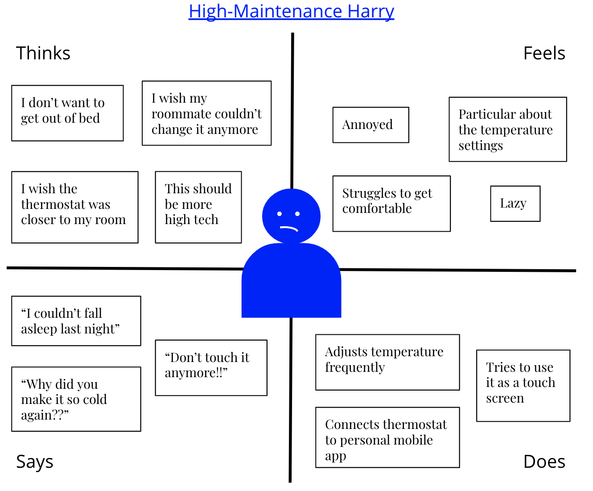

Personas & Storyboarding: Nest Thermostat
Overview
This project hones in on developing personas and storyboards. For this project I chose a public facing interface (a Nest thermostat) and then observed how real users interact with it. After conducting follow up interviews, I created two personas and a storyboard for one persona. Personas provide user models that allow designers to evaluate designs and best meet a user’s needs. The goal of this project was to practice stepping into a user’s shoes and develop greater user empathy. Along the way, I learned more about users’ mental models and how to turn interviews and observations into real insights.
Sketch & Description

Thermostats provide users access to and control over the heating and cooling systems of their living space. Users can operate the Nest thermostat in two ways: rotating the outer ring left and right to scroll or pressing in on the thermostat to click or select. The main screen allows users to select the temperature and the second screen provides more detailed options and features.
Observations
Users were observed interacting with the thermostat given no background information. Some users had used it before and others had not.
Key Insights
- New users tried to touch the screen with their fingers before pressing down on the thermostat itself
- Most users would start by setting the temperature and only some would explore more features → mostly the calendar/schedule feature
User 1
- Inexperienced user
- Tried to click on the screen with finger multiple times
- “It thought it was a touch screen, that’s what it looks like”
- “I don’t like that it was misleading”
- “Touch screens are more fun and easier”
- Accidentally scheduled a temperature change
- Became frustrated with trying to do anything other than change the temperature
User 2
- More experienced user, knew how to use the spin and clicking, never tried to touch the screen
- Turned on the eco mode
- “I don’t want to waste energy when I leave the apartment”
- Deleted scheduled temperatures from the calendar
- “It tries to be too smart”
- Showed that it was connected to an app on their mobile phone
User 3
- Only user who noticed inconsistencies in how long it said it would take to get to the new temperature
- “72 and a little more of a spin is 15 minutes. 72 and a little less of a spin is under 10 minutes”
- “Now I’m just confused”
- Struggled to return to main menu after scheduling a temperature change
- “I don’t know how to get out of it”
- “I feel like an old person right now”
- Experienced user
- “Now I know you have to spin and click, but it kind of makes you think that it’s a little touch dude”
Interviews
What is your first reaction to this interface?
- All users said it was sleek and simple. One user noted that it was not immediately intuitive how to use it (twist motion, no buttons) and that it was not clear there were features other than setting temperature.
How often do you set your thermostat?
- All users said they want the temperature to change twice a day: one temperature for the day and one for night when they are sleeping. Two users actually change it everyday multiple times and one user said they only change it when their roommate makes it an undesirable temperature.
How do you decide when to change the temperature?
- Most users said they decide based on how they feel, even if this is correlated with a timed routine they don’t decide based on the time. One user said they consider the outside temperature (e.g. reducing waste by not using A/C at night if it’s already cold) as well and two said they did not.
How easy is it to accomplish your goal? (Scale of 1-6)
- Two users separated their answers and said 6 for setting the temperature but lower (2-3) for any other feature. One user gave it a 4 overall and said a simpler interface with two buttons would have been easier.
Do you use any features other than setting temperature?
- All users said they did/would use the mobile app. Two users said they would not want to schedule temperatures because they like to change it based on feel.
- One user noted that they specifically delete anything that has been scheduled because they don’t want to waste energy if they leave during the day.
- Counter to that, one user said they would use a scheduling feature to set it based on their work/leaving the house schedule.
What do you wish you could do with this interface?
- There were a variety of desired features: disable the scheduling entirely, adding a touch screen, adding a back button to make it easier to return to the main menu, more transparency around what the eco setting actually does, and even adding a music playing feature. Some of these wishes indicated more practical needs vs. more novel features.
What is most important to you in a thermostat?
- All users said the most important thing was a thermostat that is easy and simple to use. One noted they appreciate the transparency of whether A/C or heat is being used because their thermostat at home can be unclear sometimes and they want to use the least energy. One user said the phone app would be more important to them than the actual thermostat.
Overall trends:
- Most users said that setting temperature was the most important and ranked this highly in terms of how easy it was to do.
- For other features (scheduling, mobile app) users were not immediately aware of them or struggled to use them due to the limited funtions (twisting and clicking).
Key Differences: How users decide when to change the temperature
- Some users were more focused on practicality and being eco friendly
- Considering outside temperature and when they leave for the day
- Some users were more focused on personal comfort
- Communal aspect of the thermostat → changing in response to other roommates
- Not considering energy usage
Personas

- Harry is a young tech savvy college student living in an apartment with roommates for the first time. His roommates have different temperature preferences and they are often fighting over what it should be.
- Harry thought the display screen was a touch screen and gets frustrated when it's not. He expects high tech products and for him an easy to use interface would be a touch screen like his iPhone. Harry does like that he can connect the thermostat to his phone because he can change it without getting out of bed at night or in the morning. However, he wishes this was easier to set up. He finds the settings page confusing and it took him a while to find the feature he was most interested in.
- Harry represents users of a thermostat who are most concerned with their personal comfort. He does not consider the waste or energy costs or the outside temperature in using the thermostat. Harry represents the users who expressed that a touch screen would be “more fun and easier to use” and said that the phone app is more important than the actual thermostat. Harry is important for understanding younger and more tech savvy users who are accustomed to instant gratification and high tech products.
- Cam is a young eco-conscious adult who works a 9-5 job living in an apartment building who routinely sets the temperature warmer during the day and colder at night. They live alone and want to be comfortable, while also not wasting energy or racking up a high bill.
- Cam is used to a thermostat with buttons rather than the twisting and clicking of the Nest. Cam likes the simplicity of it, but actually wishes it was more simple to perform actions such as scheduling temperatures. Cam changes the temperature everyday at routine times (leaving for work, coming home from work, before going to bed), so it would be much more efficient to schedule these changes everyday rather than manually changing it.
- Cam represents users who are more eco focused and waste conscious. Cam makes decisions on the temperature based on many factors such as the outside temperature and the utilities bill. Cam represents the user who said, “I feel like an old person using this.” This user appreciates the additional features, but wants something more accessible. They represent a more practical user who still wants to be comfortable but also have control over how much energy they are consuming.
Storyboard
This storyboard depicts High Maintenance Harry navigating one of his first nights at school.
Takeaways
- The key differentiators of the Nest thermostat are the more intricate features such as scheduling changes, connecting to a mobile app, and the display screen. While most users originally said they only use a thermostat to change the temperatures, later on they expressed interest in these additional features.
- Nest’s interface, while more high tech than other thermostats, could actually become more usable by becoming more high tech and including a touch screen. The prevalence of touch screens for mobile phones means users are used to interacting with display screens this way and multiple users thought it would be a touch screen.
- While the Conscientious Cam persona expressed some difficulty with the interface (“I feel like an old person”), this was not because the interface was too high tech, but rather because the limited ways users can interact with the interface (twisting and clicking). Therefore, a touch screen could actually help these users accomplish their goals as well because a touch screen would allow for easier interaction with the settings screen and provide a back button which a user also requested.
- Lastly, I would like to thank everyone who let me observe and interview them. I gained many important insights from my users. I learned that sometimes what a user doesn't do or doesn't say is just as important as what they do or say.